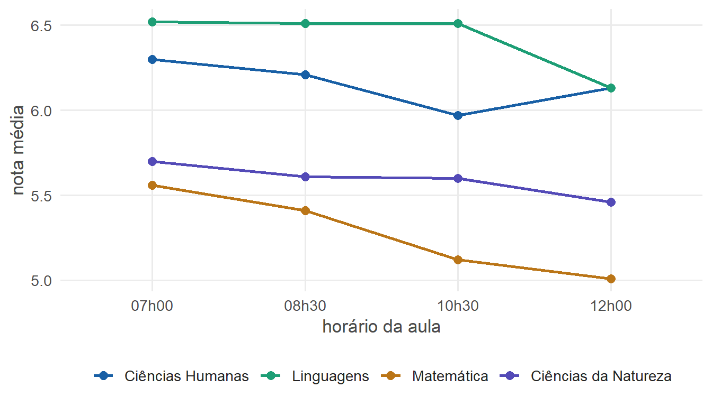
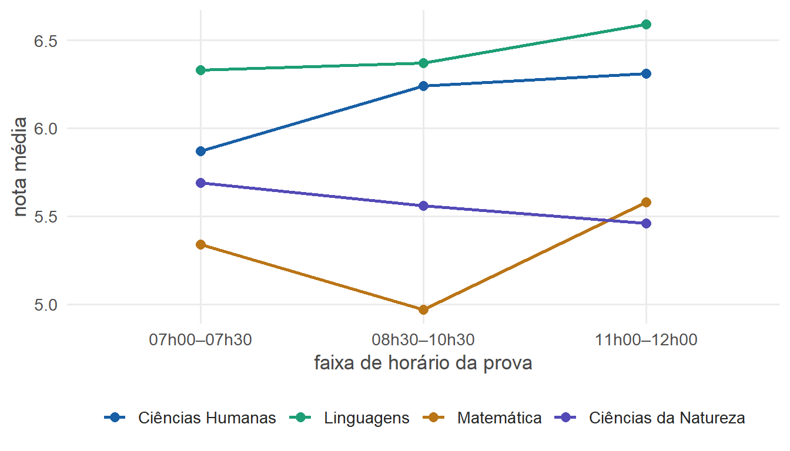

Horário escolar e desempenho: o que 27 mil notas revelam
Especialização em Neurociência & Aprendizagem (2026) · limpeza, EDA, ANOVA/Kruskal-Wallis e correção de múltiplos testes em R
NoteResumo executivo
A partir de 27.650 registros de notas de 384 alunos (2022–2024) de uma escola de São Paulo, investiguei uma pergunta com cara de negócio: o horário das atividades afeta o resultado? Limpei e estruturei os dados em R, explorei com visualizações e testei as diferenças com métodos estatísticos robustos (ANOVA + Kruskal-Wallis em paralelo, com correção para múltiplas comparações). Achados: aulas mais cedo → melhores notas em todas as áreas; provas mais tarde → melhores notas (com exceção de Ciências da Natureza). O resultado vira uma recomendação concreta de organização de horários.
O contexto
Na adolescência, o relógio biológico atrasa — os jovens dormem e acordam mais tarde. A escola, porém, começa cedo. Este trabalho (especialização em Neurociência) testou, com dados reais de desempenho, se o horário de aulas e provas se reflete nas notas.
A pergunta de negócio (traduzida)
Existe um horário em que o “produto” (a aula, a prova) rende mais? O efeito é o mesmo para todos os segmentos (áreas do conhecimento) — ou alguns se comportam diferente?
É a mesma forma de pensar de quem otimiza horário de campanha, escala de turno ou janela de atendimento a partir de dados.
Os dados
27.650 registros em formato longo (1 linha = 1 nota de um aluno numa disciplina)
384 alunos (1º e 2º ano do Ensino Médio), anos de 2022 a 2024
20 disciplinas agrupadas em 4 áreas do conhecimento (reduz viés de disciplina/professor)
Cada registro cruza: nota · disciplina · área · turma · horário da aula · horário da prova · ano · semestre
Dados anonimizados e tratados (padronização de variáveis textuais e numéricas) antes da análise
Cruzamento das planilhas (notas × grade de horários de aula e prova) no Excel, antes de importar para o R
Dos métodos às habilidades de mercado
No trabalho
Como habilidade de dados
Excel
Funções para manipulação e organização dos dados
dplyr sobre 27.650 registros
Manipulação e limpeza de dados (data wrangling)
Boxplots por área e horário (ggplot2)
Análise exploratória e visualização
ANOVA + Kruskal-Wallis em paralelo
Testes paramétricos e não-paramétricos + checagem de robustez
Post-hoc de Wilcoxon par a par
Comparações múltiplas entre grupos
Correção de Benjamini-Hochberg
Controle de falsos positivos (FDR)
Agrupar horários para equilibrar amostras
Binning / feature engineering por poder estatístico
Recomendação de organização escolar
Tradução de análise em decisão acionável
Resultado 1 — horário da aula
A nota média por horário de início da aula, em cada área (dados reais do estudo):
ver código R
ggplot(aula, aes(horario, media, color = area, group = area)) +geom_line(linewidth =0.9) +geom_point(size =2.6) +scale_color_manual(values = cores_area) +labs(x ="horário da aula", y ="nota média", color =NULL) +tema_portfolio()

Figure 1: Nota média por horário da aula. Em todas as áreas, os primeiros horários rendem notas mais altas.
As diferenças são estatisticamente significativas em todas as áreas — e os dois testes (paramétrico e não-paramétrico) concordam:
Área da aula
ANOVA (p)
Kruskal-Wallis (p)
interpretação
Ciências Humanas
0,0052
0,0017
ambos significativos
Linguagens
<0,001
<0,001
ambos significativos
Matemática
<0,001
<0,001
ambos significativos
Ciências da Natureza
0,0426
0,0253
ambos significativos
Resultado 2 — horário da prova
Aqui o padrão se inverte — e quebra por área:
ver código R
ggplot(prova, aes(faixa, media, color = area, group = area)) +geom_line(linewidth =0.9) +geom_point(size =2.6) +scale_color_manual(values = cores_area) +labs(x ="faixa de horário da prova", y ="nota média", color =NULL) +tema_portfolio()

Figure 2: Nota média por faixa de horário da prova. Provas mais tarde tendem a render mais — exceto em Ciências da Natureza, que vai na direção oposta.
Área da prova
ANOVA (p)
Kruskal-Wallis (p)
interpretação
Linguagens
0,0011
<0,001
ambos significativos
Ciências Humanas
<0,001
<0,001
ambos significativos
Matemática
<0,001
<0,001
ambos significativos
Ciências da Natureza
0,0131
0,0055
ambos significativos
Por que corrigir para múltiplas comparações?
Ao comparar vários pares de horários, cada teste tem uma chance de dar um “falso positivo”. Quanto mais testes, maior o risco de achar diferença onde não há. A correção de Benjamini-Hochberg ajusta os p-valores para controlar essa taxa — é uma linha de R:
Aula: quanto mais cedo, melhor — em todas as 4 áreas (ANOVA e Kruskal-Wallis concordam). O período da primeira aula parece pegar o aluno já no “ótimo” do despertar fisiológico.
Prova: o oposto, e não uniforme — Ciências Humanas e Linguagens rendem mais em provas tardias; Matemática faz um “U”; e Ciências da Natureza vai na contramão, melhor logo cedo.
A leitura: aprender e ser avaliado mobilizam processos cognitivos diferentes, sensíveis ao horário de formas diferentes por área.
Por que isso importa para uma empresa
É um caso completo de análise: dados secundários bagunçados → limpeza e estruturação → exploração visual → teste estatístico robusto → correção honesta → recomendação acionável (distribuir aulas e provas de forma mais estratégica). Troque “nota por horário” por “conversão por horário de campanha” e é o mesmo trabalho.